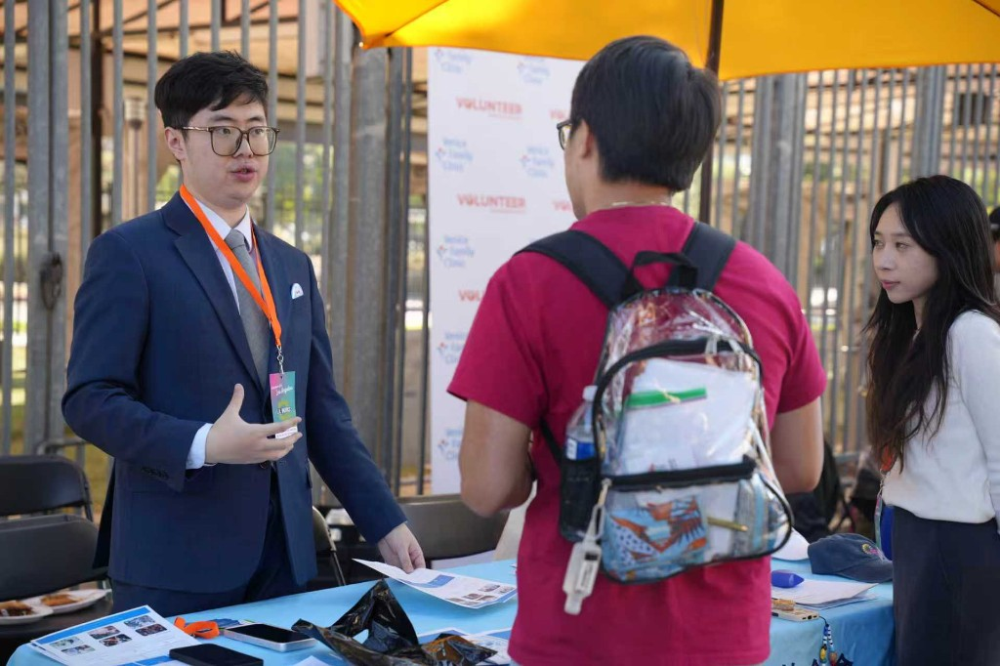

JDP Foundation
A New Pathway to Mental Resilience.
From charity to empowerment — investing in the mental and social infrastructure of the future.
Chinese Psychological Assistance Foundation
De-medicalized, culturally sensitive support. Proudly funded and supported by the J.D. Phoebe Foundation.
The current mental health system often forces individuals into a highly standardized, medicalized path the moment they seek help. At CNPAF, we believe not all distress is an illness. Many face structural stress, academic pressure, cultural disconnection, or life transitions. Our vision is to fill the critical gap in mental health care by providing a low-barrier, non-pathologizing support space. We default to the assumption that our visitors are simply human beings under pressure—not patients to be diagnosed.

Our Core Model: The 3-Stage Care Pathway
- Stage I: Triage & Understanding: A free, zero-pressure entry point focused on active listening. We seek to understand who you are and what you have experienced, distinguishing temporary emotional reactions from long-term structural stress without premature clinical diagnosis.
- Stage II: Structural Support: For those carrying chronic stress but not requiring clinical treatment, we provide continuous, non-medicalized 1-on-1 support, peer groups, and community networks to build coping skills and prevent isolation.
- Stage III: Clinical Referral: When clinical intervention is truly necessary, we facilitate a smooth transition to culturally matched, professional therapy, acting as a neutral, supportive bridge throughout the process.
CNPAF Youth Cabinet
A junior think tank and leadership incubator housed under the Foundation’s CNPAF-related programming. Members advise on initiatives, propose projects, and receive mentorship across law, technology, and culture — with emphasis on psychological resilience and civic judgment.
In an era of accelerating change, CNPAF Youth Cabinet offers a structured arena to practice governance, collaboration, and real-world project leadership — complementing CNPAF’s mental health mission with pathways for emerging leaders.
- Cabinet-style governance simulation and proposal cycles
- Psychological capital: EQ, resilience, and empathy
- Access by nomination; assessment of logic, leadership potential, and social awareness